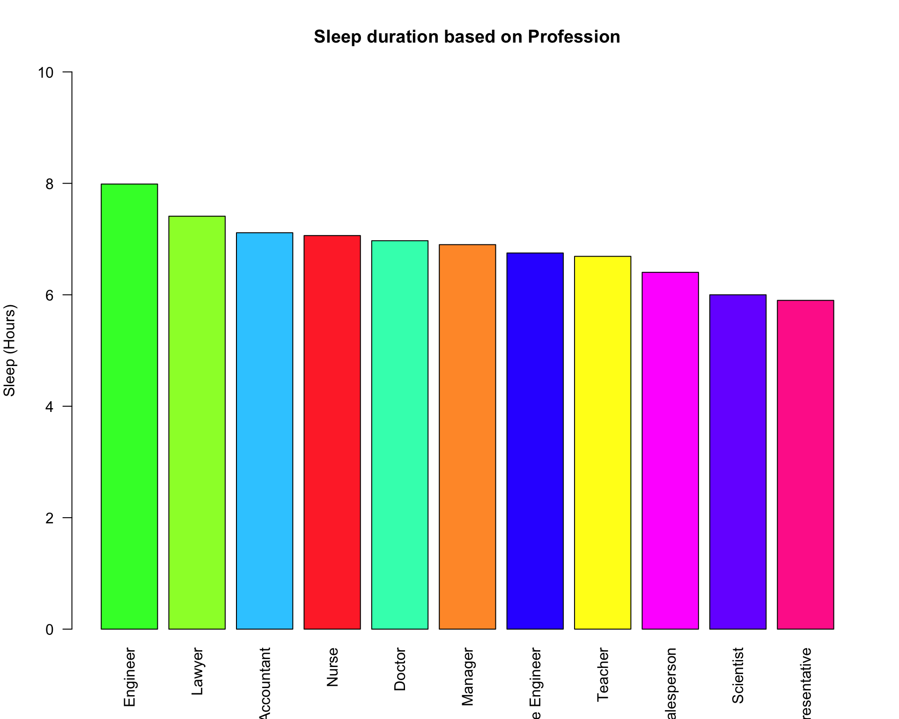
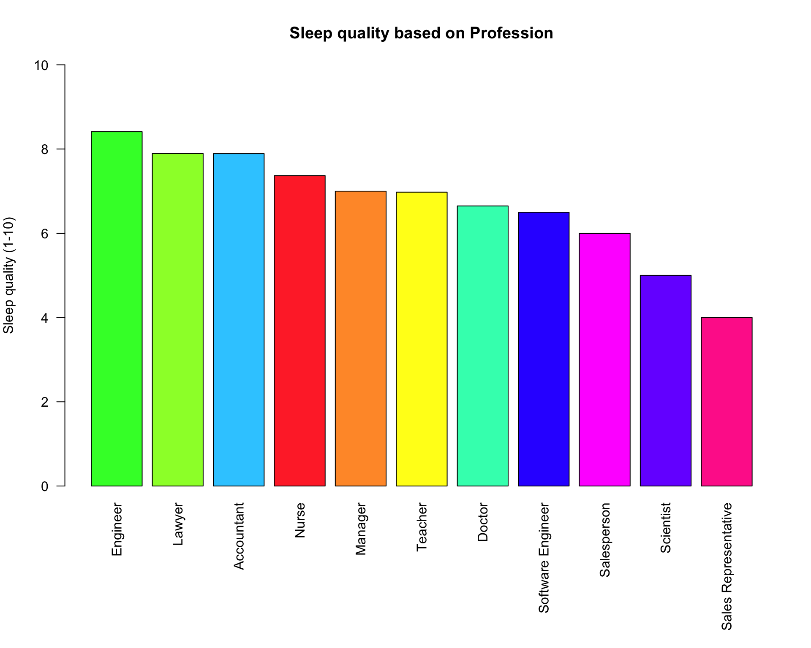
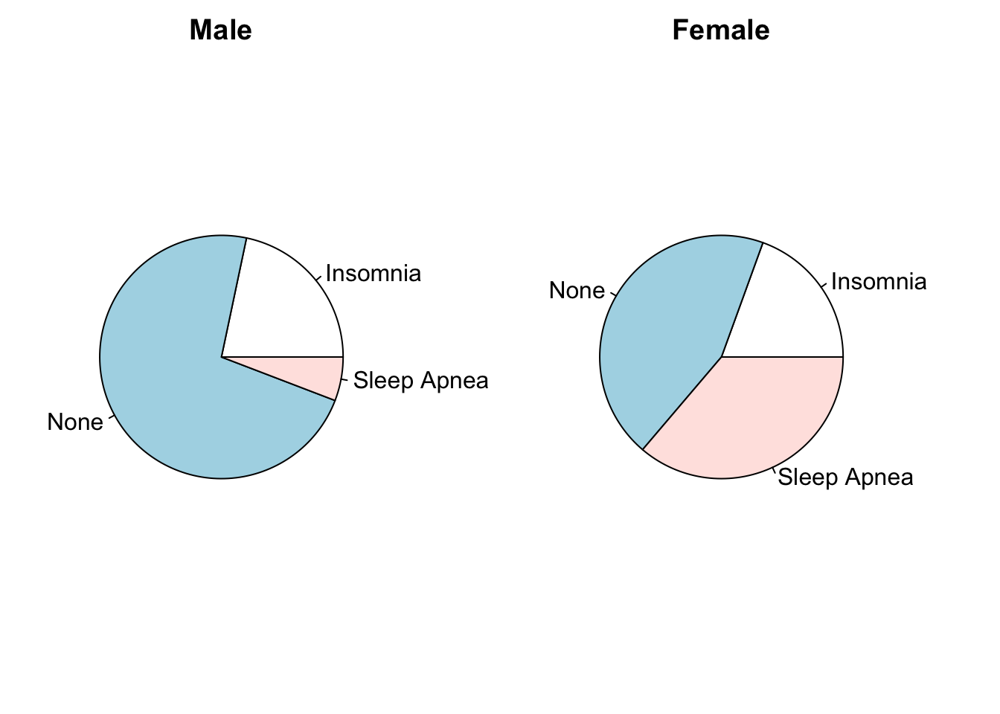
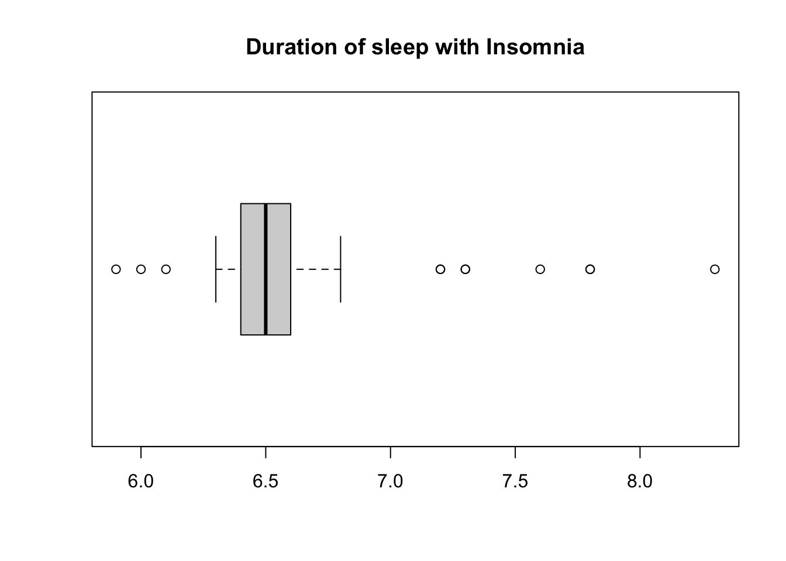
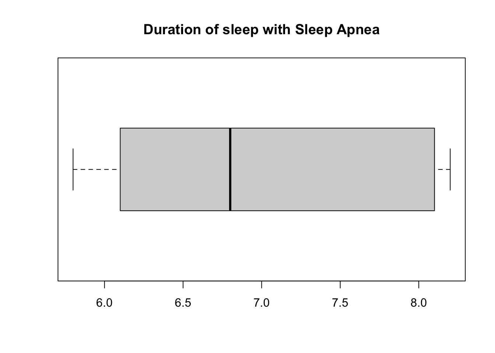

#install.packages("ggplot2")
#library("ggplot2")Case-II: Lifestyle and Sleeping Quality
Test of cae folder
#Reading the file
sleep<-read.csv("sleep.csv")#Types of Jobs at a study
unique(sleep$occupation) [1] "Software Engineer" "Doctor" "Sales Representative"
[4] "Teacher" "Nurse" "Engineer"
[7] "Accountant" "Scientist" "Lawyer"
[10] "Salesperson" "Manager" #Types of Sleep disorders in the study
unique(sleep$sleep_disorder)[1] "None" "Sleep Apnea" "Insomnia" #Range of sleep quality
sort(unique(sleep$sleep_quality))[1] 4 5 6 7 8 9#Sample size
print(sample_size<-length(sleep$gender))[1] 374#Mean of sleep time
print(mean_sleepdur<-mean(sleep$sleep_duration))[1] 7.132086Relation between Occupation and Sleep duration
coljack<- matrix(c("#33ccff","#33ffbb","#33ff33","#99ff33","#ff9933","#ff3333","#ff3399","#ff33ff","#7733ff","#3333ff","#ffff1a"), nrow=11)
sleepocdu<-aggregate( sleep_duration ~ occupation, data = sleep, FUN = mean)
sleepocdu<-cbind(sleepocdu,coljack)
sleepocdu <- sleepocdu[order(-sleepocdu$sleep_duration),]
print(sleepocdu) occupation sleep_duration coljack
3 Engineer 7.987302 #33ff33
4 Lawyer 7.410638 #99ff33
1 Accountant 7.113514 #33ccff
6 Nurse 7.063014 #ff3333
2 Doctor 6.970423 #33ffbb
5 Manager 6.900000 #ff9933
10 Software Engineer 6.750000 #3333ff
11 Teacher 6.690000 #ffff1a
8 Salesperson 6.403125 #ff33ff
9 Scientist 6.000000 #7733ff
7 Sales Representative 5.900000 #ff3399par(mar = c(5, 4, 4, 2))
bpsd <- barplot(
sleepocdu$sleep_duration, col = sleepocdu$coljack, main = "Sleep duration based on Profession", axis.lty = 0, ylim = c(0, 10), ylab = "Sleep (Hours)", names.arg = sleepocdu$occupation, las=2
)
Engineer is with the highest duration of sleep on average
sleepocqw<-aggregate( sleep_quality ~ occupation, data = sleep, FUN = mean)
sleepocqw<-cbind(sleepocqw,coljack)
sleepocqw <- sleepocqw[order(-sleepocqw$sleep_quality),]
print(sleepocqw) occupation sleep_quality coljack
3 Engineer 8.412698 #33ff33
4 Lawyer 7.893617 #99ff33
1 Accountant 7.891892 #33ccff
6 Nurse 7.369863 #ff3333
5 Manager 7.000000 #ff9933
11 Teacher 6.975000 #ffff1a
2 Doctor 6.647887 #33ffbb
10 Software Engineer 6.500000 #3333ff
8 Salesperson 6.000000 #ff33ff
9 Scientist 5.000000 #7733ff
7 Sales Representative 4.000000 #ff3399par(mar = c(10, 4, 4, 2))
barplot(sleepocqw$sleep_quality,
names.arg = sleepocqw$occupation,
col = sleepocqw$coljack,
main = "Sleep quality based on Profession",
axis.lty = 0,
las=2,
ylim = c(0,10),
ylab = "Sleep quality (1-10)"
)
sleepocst<-aggregate(stress_level ~ occupation, data = sleep, FUN = mean )
sleepocst<-cbind(sleepocst,coljack)
sleepocst<-sleepocst[order(-sleepocst$stress_level),]
print(sleepocst) occupation stress_level coljack
7 Sales Representative 8.000000 #ff3399
8 Salesperson 7.000000 #ff33ff
9 Scientist 7.000000 #7733ff
2 Doctor 6.732394 #33ffbb
10 Software Engineer 6.000000 #3333ff
6 Nurse 5.547945 #ff3333
4 Lawyer 5.063830 #99ff33
5 Manager 5.000000 #ff9933
1 Accountant 4.594595 #33ccff
11 Teacher 4.525000 #ffff1a
3 Engineer 3.888889 #33ff33bpst<-barplot(sleepocst$stress_level, col = sleepocst$coljack, main = "Occupation and stress level", ylab = "Stress level (1-10)", ylim = c(0,10), )
text(x = bpst, y = sleepocst$stress_level + 0.3, labels = sleepocst$occupation, srt = 90,adj = 0,cex = 1
)
Sleep disorder
table(sleep$sleep_disorder)
Insomnia None Sleep Apnea
77 219 78 Sleep Apnea is most common (excluding no disorder)
sleep_male<-sleep[sleep$gender %in% c("Male"),]
#Male
table(sleep_male$sleep_disorder)
Insomnia None Sleep Apnea
41 137 11 sleep_female<-sleep[sleep$gender %in% c("Female"),]
#Female
table(sleep_female$sleep_disorder)
Insomnia None Sleep Apnea
36 82 67 Most common in Male is Insomnia Most common in Female is Apnea
sleepocst_Male<-aggregate(stress_level ~ occupation, data = sleep_male, FUN = mean )
sleepocst_Male<-sleepocst_Male[order(-sleepocst_Male$stress_level),]
print(sleepocst_Male) occupation stress_level
5 Sales Representative 8.000000
6 Salesperson 7.000000
2 Doctor 6.840580
8 Teacher 6.200000
1 Accountant 6.000000
7 Software Engineer 6.000000
4 Lawyer 5.044444
3 Engineer 4.806452Male Sales Representatives has highest stress
sleepocst_Female<-aggregate(stress_level ~ occupation, data = sleep_female, FUN = mean )
sleepocst_Female<-sleepocst_Female[order(-sleepocst_Female$stress_level),]
print(sleepocst_Female) occupation stress_level
7 Scientist 7.000000
6 Nurse 5.547945
4 Lawyer 5.500000
5 Manager 5.000000
1 Accountant 4.555556
8 Teacher 4.285714
2 Doctor 3.000000
3 Engineer 3.000000Female Scientist has highest stress
sleepocqw_male<-aggregate( sleep_quality ~ occupation, data = sleep_male, FUN = mean)
sleepocqw_male <- sleepocqw_male[order(-sleepocqw_male$sleep_quality),]
print(sleepocqw_male) occupation sleep_quality
1 Accountant 8.000000
4 Lawyer 7.933333
3 Engineer 7.806452
2 Doctor 6.579710
7 Software Engineer 6.500000
6 Salesperson 6.000000
8 Teacher 6.000000
5 Sales Representative 4.000000Lowsest Male sleep quality is for Sales Representatives
sleepocqw_female<-aggregate( sleep_quality ~ occupation, data = sleep_female, FUN = mean)
sleepocqw_female <- sleepocqw_female[order(-sleepocqw_female$sleep_quality),]
print(sleepocqw_female) occupation sleep_quality
2 Doctor 9.000000
3 Engineer 9.000000
1 Accountant 7.888889
6 Nurse 7.369863
8 Teacher 7.114286
4 Lawyer 7.000000
5 Manager 7.000000
7 Scientist 5.000000Lowest Female sleep quality is for Scientist
print(cor(sleep$sleep_quality,sleep$stress_level))[1] -0.898752There is a negative correlation between stress level and sleep quality meaning the more stress a person have the worse is there sleep quality. Also basing that there is a similar correlation in separate female and male group i think that there is enough evidence to say there can be a strong correlation.
sleep_male_insomnia<-sleep_male[sleep_male$sleep_disorder %in% c("Insomnia"),]
print(length(sleep_male_insomnia$gender)/length(sleep_male$gender)*100)[1] 21.69312Wrong 21.69 percent of males strugle from Insomnoa
print(mean(sleep_male_insomnia$daily_steps))[1] 5812.195Wring the average daily steps by males with insomnia is 5812
sleep_insomnia<-sleep[sleep$sleep_disorder %in% c("Insomnia"),]
summary(sleep_insomnia$sleep_duration) Min. 1st Qu. Median Mean 3rd Qu. Max.
5.90 6.40 6.50 6.59 6.60 8.30 boxplot(sleep_insomnia$sleep_duration, horizontal = TRUE, main = "Duration of sleep with Insomnia")
sleep_apnea<-sleep[sleep$sleep_disorder %in% c("Sleep Apnea"),]
print(summary(sleep_apnea$sleep_duration)) Min. 1st Qu. Median Mean 3rd Qu. Max.
5.800 6.100 6.800 7.032 8.100 8.200 boxplot(sleep_apnea$sleep_duration, horizontal = TRUE,main = "Duration of sleep with Sleep Apnea")